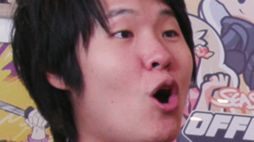

Nickmercs:
Nicholas Kolcheff, otherwise known as Nickmercs, is a FPS streamer for Faze Clan. He started out as a professional Gears of War player for 100 Theives but now has moved on to being a streamer.
He has high enegry and is very quick witted. He stream is for mature audiences so be wary before tuning in. He and his buddies always have a good time and are enjoyable to watch.
You can find him at: https://www.twitch.tv/nickmercs
Disguised Toast :
Jeremy Wang, otherwise known as Disguised Toast, is a memeber of OfflineTV and is a variety streamer on Facebook. Known for Hearthstone in his earlier years
he is now an Among Us sleuth and master of deception. He also plays Valorant and many other games.
You can find him at: https://www.facebook.com/disguisedtoast/
TimTheTatman:
Timothy John Betar, otherwise known as TimTheTatman, is a variety streamer on twitch. Known for taking an abundant amount of fall damage in various games,
Tim made a name for himself for his witty humor and wildcard plays. He is very good friends with Nickmercs and loves talking about food.
You can find him at: https://www.twitch.tv/timthetatman
Tommyinnit:
Thomas Simons, otherwise known as Tommyinnit, is a British Minecraft streamer.
He started streaming in 2018 and in early 2021 he streamed to over 650,000 people the finale of the Dream SMP server. He is watched by people of all ages but does tend to curse so be warned before tuning in.
You can find him at: https://www.twitch.tv/tommyinnit
Ludwig:
Ludwig Ahgren, otherwise known as Ludwig, is also a variety streamer. He started his gaming career as a Super Smash Bros. commentator in 2018. He then turned to streaming in 2019 and gaining
more traction up until the present day where he has over 2.5 million followers. He also just finished a 30 day non-stop livestream where he made considerable donations to Humane Society of the United States and St. Jude's Children's Research Hospital.
You can find him at: https://www.twitch.tv/ludwig